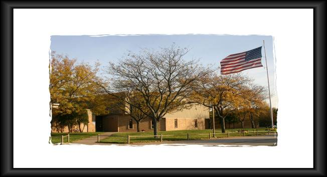
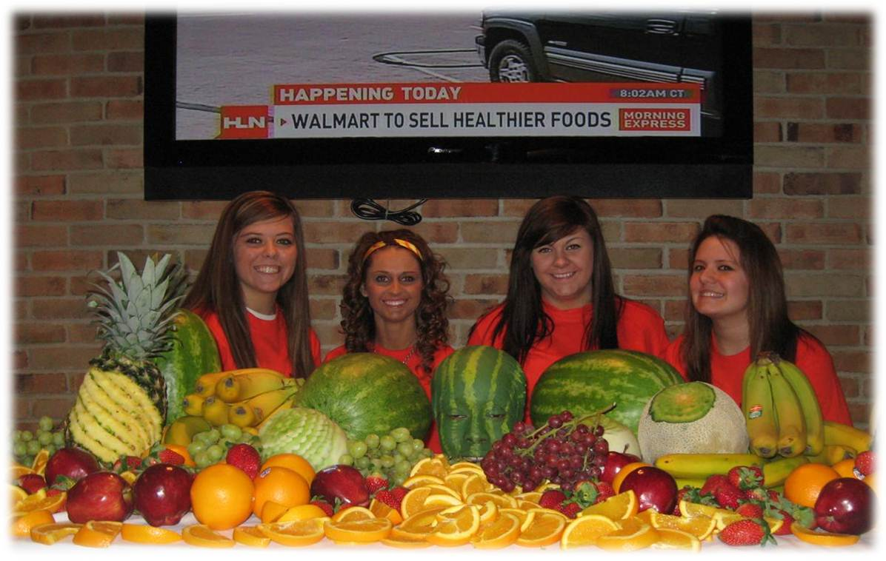
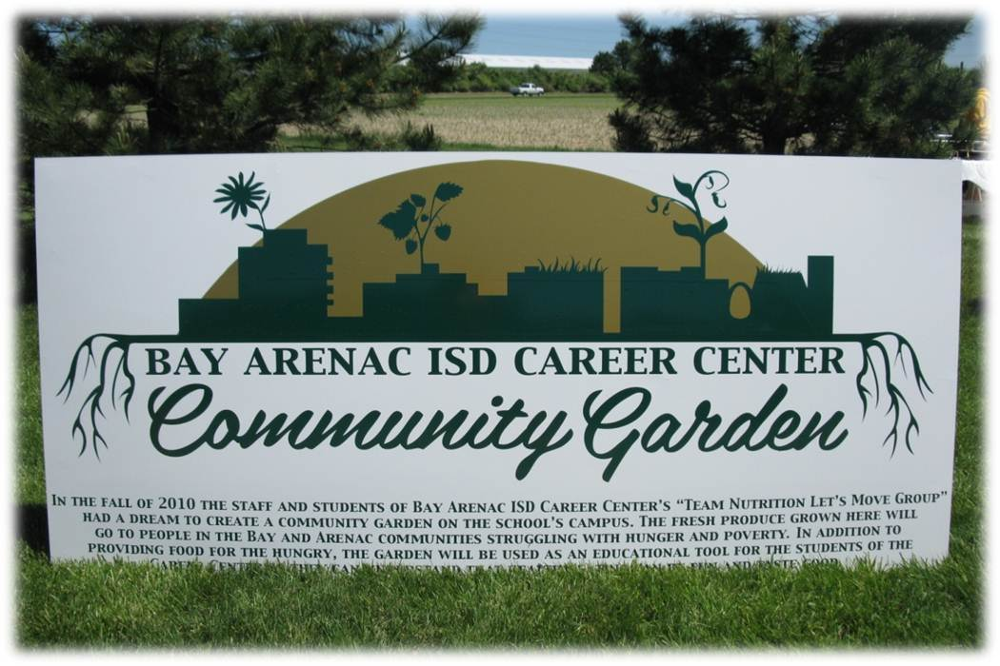
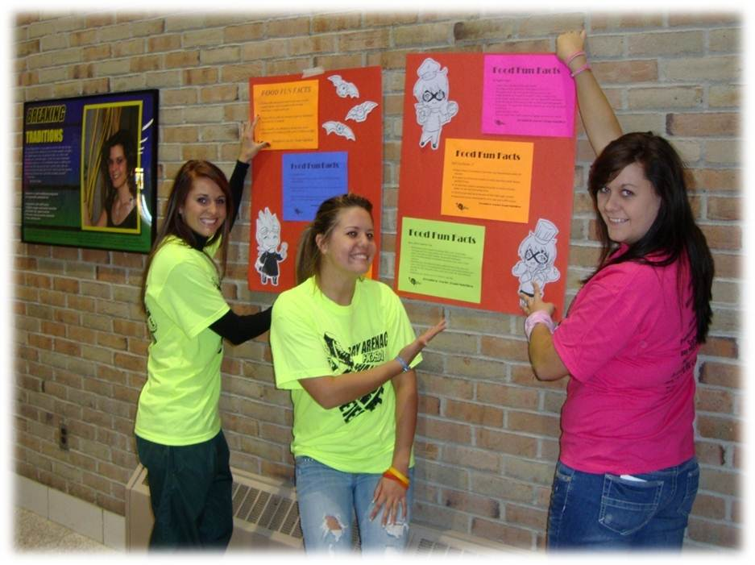
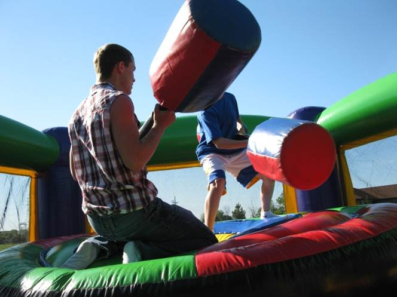

"We are going to need everyone's time and talent to solve the childhood obesity epidemic and I am calling on our Nation's chefs to get involved by adopting a school and working with teachers, parents, school nutritionists and administrators to help educate kids about food and nutrition. You have tremendous powers as leaders on this issue because of your deep knowledge of food and nutrition and your ability to deliver these messages in a fun and delicious way and I want to thank you for joining the Chefs Move to Schools campaign.
- First Lady Michelle Obama
The Let's Move campaign and the Chefs Move to Schools campaign were both inspirational in the creation of Team Nutrition. With the help of our own Chef Andy Bacigalupo, students, and staff, we have already improved the health and nutrition standards of our school and helped hundreds in our community because of all the food donations from our community garden. We hope this year will be even better than the last!
About Team Nutrition

Team Nutrition was formed as a collaborative group comprised of staff, students, vendors, and administrators to promote healthy choices to our students at the Bay Arenac ISD Career Center.
Organized in the Early Fall of 2010
Formed with 60 members; 29 students in the AM session and 3l students in the PM session.
Also Several Staff Members
Students from ALL Programs including:
Nursing
Culinary
Engineering
Forensic Science
Graphics
Agri-Science
Dental
Law Enforcement, etc.
We Meet Once a Month to Brainstorm & Carry-Out Activities
Volunteering
Team Nutrition is more than just staying healthy, it is also about helping your community. Take part in volunteer work in your neighborhood. It can be both fun and rewarding. One idea of volunteer work would be volunteering at a local park.
The map below shows the local parks that you can volunteer at if you live in the Bay area.

On January 20, 2011, Team Nutrition hosted a Wellness Fair. Over 1,100 people attended
Wii Just Dance, Zumba, and Yoga stations
There were many informational booths including:
Too Much Sugar!
Too Much Salt!
Reading Your Labels
Sugar in Soda
Talking Fruit Display
Many fruit and vegetable stations
Water Bottles donated by Bay Regional Medical Center
Community Garden
 Our most recent project was the community garden. Created by students and cared for by students, we were able to donate 1,200 pounds of food to the local food pantries, making a difference in the community.
Click the image above to see an image gallery of the community garden.
2010 Activities

Wellness Fair
Informational Booths
Free Bottled Water and Fruit
Contests and Prizes
Cooking Demonstrations
Children's Cook Book
Sell to Raise Money for Charity
New Healthy Menu Items in School Store Cafeteria
Community Garden constructed, planted and maintained by Career Center students
Our Team Nutrition Students Created & Posted Over 100 Information Signs throughout our school in recognition of Childhood Obesity Day! They contained food facts, nutritional information, and motivational tips to exercise!
Team members also read announcements over the PA systems each day of the week stating some of the facts we found.
About the Chef
Chef Andy Bacigalupo is the chef of Bay Arenac ISD Career Center. After participating in Dr.Oz's Salt Detox Challenge, he lost 40 pounds and created Team Nutrition. Chef's Move to Schools and Let's Move campaigns also inspired the creation of Team Nutrition.
Recipies of the Month
After completing the Salt Detox Challenge, Chef Andy created some salt free recipies that are both delicious and healthy. Here is one of his delicious recipies:
Turkey Burger Recipe
Ingredients
5 or 6 oz ground turkey
1 onion
Portobello mushrooms to taste (1 or 2)
Chopped chives
Directions
Grill turkey burger for 5 minutes. Caramelize onions in pan using salt-free spray butter. Add portabella mushrooms halfway through cooking of onions. Add small amount of chopped chive to onion and mushroom saute. Make "whole-wheat crouton" using piece of wheat toast cut into circle same size of turkey burger using cookie cutter.
Poaching Liquid
Poaching liquid made of ginger, lemon and lime. Start by using a small bulb of ginger, about the size of a quarter. Peel that and chop it, but not too fine, so you can remove the ginger while eating. Throw that in a quart of water and then squeeze the juice of 2 lemons and 2 limes into the liquid. Use to poach green beans, cauliflower, broccoli and corn.
This month's healthy tip is how to keep your heart healthy. Here are the steps to a healthy heart.
1.Reduce fat
2.Exercise
3.Keep weight down
4.Eat less salt
5.Stop smoking
6.Relax
7.Think lifestyle change rather than dieting
8.Monitor your health status
Ways to Stay Fit

Exercise can be boring sometimes, but it is one of the only ways to stay healthy and fit. Here are some links to videos that show exercise can be fun and entertaining when you put forth the effort.
Think you have a good idea to help out your community? Know any good ways to stay healthy and fit? Submit any good ideas and we will post them on the site.